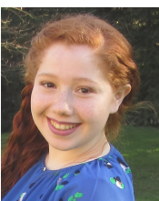

CV Ruimy Eden
Bonjour!
Bienvenue sur mon site !
>

Diplomes
2020-2021 …………… Première année en Cycle d’ingénieur Instrumentation à la Sorbonne Paris Nord
2019-2020 ……………. Deuxième année de Licence de Science de L’ingénieur
2018 2019…………….. Première année de Licence de Science de L’ingénieur
2017-2018 …………….. Une année en séminaire linguistique en Angleterre
2016-2017 ……………. BAC S avec mention
Juin 2014 ………….…… Brevet des collèges avec mention
Experience professionnelle
Juillet 2016....................... Monitrice dans un centre de loisirs à Paris La Défense
Juillet / Aout 2017 …….. Monitrice dans un centre de loisirs à Paris Clichy
Décembre 2017................ Monitrice dans un centre de loisirs Paris 75016 (organisations d’activité)
Mai / Aout 2018……… Assistante Gestionnaire locatif (rédaction de contrat de bail, classement de documents administratifs)
Compétences bureautiques
Connaissance des logiciels
- PHOTOSHOP d'ADOBE
- FREECAD
- OCTAVE
- MATLAB
- LABVIEW
Langues
Anglais : lu écrit et parlé (Une année en séminaire linguistique en Angleterre)
{kind=link}